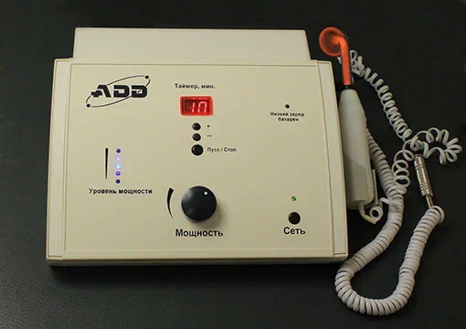

The appliance of detoxification and disinfection of human (ADD)
In partnership with LLC "PolyMedEco", we offer an innovative development by S.V. Ormann - ADD (human disinfection detoxification device)
LLC "SME INNOVATIONS" is an official partner of LLC "PolyMedEco" in the Russian Federation, CIS countries, India, Southeast Asia, North America and the European Community.




THE MAIN ADVANTAGES OF THE ADD DEVICE
- It forms oxygen inside the body independently from any oxygen sources.
- Prevents respiratory failure. Autonomously increases saturation and keeps it free from outside oxygen sources.
- Highly effective in the treatment of Covid-19 and its complications.
- Non-invasive treatment method (non-destructive, atraumatic, bloodless).
- The Human Disinfection Detoxification Device (ADD) is a safety class 2A. It works 24 hours a day.
- The device is a source that produces a non-standard antibiotic with an unlimited resource, duration of use and shelf life.
- It is ecologically compatible with the human body and other biological objects.
- The most powerful disinfectant for both external and internal use without damaging human cells, organs and tissues.
- ADD will ensure the prevention of any infections and accelerate the reparative process 2-3 times.
- It suppresses anaerobic bacterial and viral infections. Including COVID-19. It has already been used by patients in an epidemic.
- It has no contraindications, complications, side effects, or allergies. There is no overdose.
- Neutralizes toxins of any kind inside the body to inactive forms.
- Reduces body temperature during inflammation, regardless of pathology and the use of pharmacological drugs.
- Prevents the development of pneumonia, pulmonary edema, and any edema in particular. Also, the formation of blood clots.
- It relieves the acute course of the disease and its duration.
- It is indicated for any concomitant diseases.
- There are no restrictions for the treatment of children and elderly people.
- The procedures can be performed by both the medical staff in the hospital and the patient himself in the clinic or at home.
- He has completed all mandatory studies since 2010 according to the Ministry of Health of the Russian Federation.
- The tests were conducted in intensive care units of hospitals, traumatology, surgical clean and purulent departments of medical institutions in three countries: the Russian Federation, the Republic of Belarus and the Republic of Kazakhstan.
- It can be used in infectious diseases departments of hospitals in order to neutralize toxins, suppress infection directly inside the human body and detoxify toxic substances of any origin.
- It was used in gynecology, urology, proctology, neurology, ENT, pulmonology, cardiology, vascular surgery, helminthiasis, etc. It has shown good results in the treatment of childhood pathologies, is indicated during pregnancy and lactation, in children under one year of age and older, for the treatment of older people.C93
To learn more